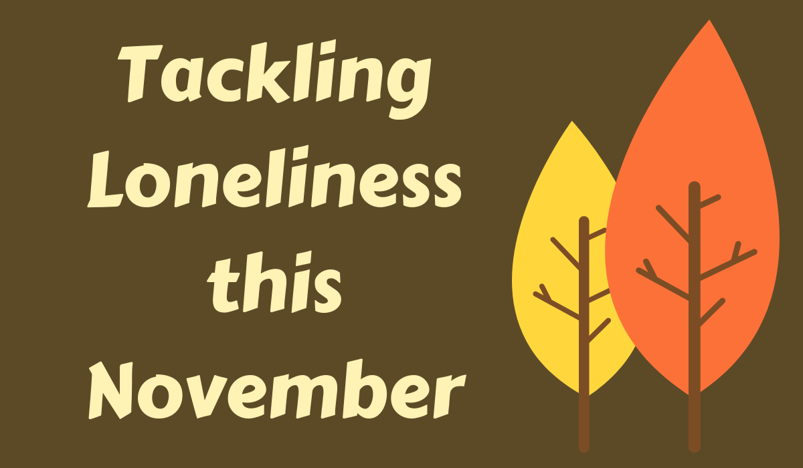

The Old Schoolhouse Latest News and Events
Tackling loneliness in November
Most of us experience loneliness at some point in our lives but, thankfully, for many it doesn't last. However, sadly, for a growing number of people loneliness is something that defines their lives. The harmful effects of loneliness are becoming much better understood and there is a growing appreciation of the need to address the issue.
Inspired by the Campaign to End Loneliness, we are running a number of projects throughout the month of November that we hope will offer local residents different chances to develop new social connections whilst also providing new activities for established friends to enjoy together. So, if you are looking for alternative ways to engage with others then please take a look at our calendar of events where hopefully you will find something appealing. We'd really encourage you to come along - you will be shown a warm welcome.
As an organisation we sometimes struggle to reach the very people who may most benefit from the type of projects we run here at the Old Schoolhouse so we are grateful to any one who can help to promote our events.
- Maybe you have a neighbour or relative you could encourage to join us for one of our events.
- Perhaps your own friendship group is looking for something new to do together.
- Maybe your work offers you a platform from which you can spread the word.
- Perhaps you are already associated with a group that works to reduce social isolation and can support us in some way.
- Maybe you have a little spare time and can help with facilitating one of our groups.
You can help us by following us on social media and sharing our posts with your friends. In addition, please feel free to print off the calendar of events below and pass it on to anyone who may be interested but who is perhaps unlikely to find us online.
Together we can help to tackle loneliness within our community.